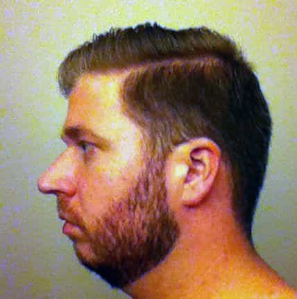
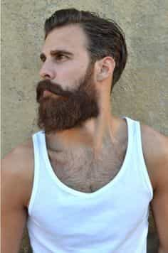
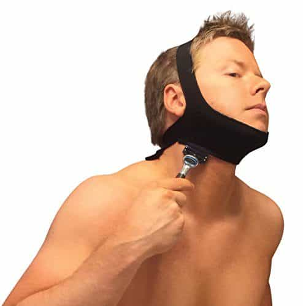
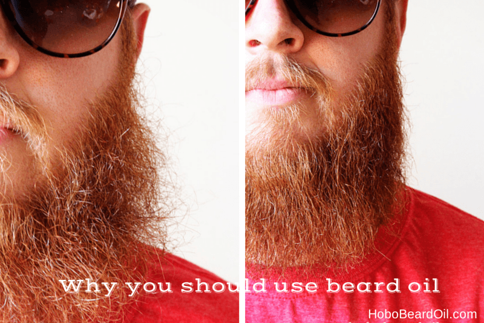

Men must use their God-given facial hair follicles to their advantage. Facial hair is The Lord’s way of giving you the opportunity to enhance yourself. We are bestowed countless opportunities daily—don’t let them all slip. You can hide a lot with a beard, especially a weak chin.

He can hide his childlike chin with more months of growth.
There are others who don’t know how to properly style their beards and half-ass it with chin straps. Chinstraps and thinly trimmed mustaches are for sensitive R&B wannabes. The worst men are those who make fun of beards while their own skin is constellation of pores and acne scars.
I will remind you: a beard can cover a lot of imperfections. If done right, it can get the girls coming your way. I’ve heard the excuse that one’s employer won’t allow them to grow a beard. You shouldn’t work anywhere that controls the way you want to where your face. Of course, don’t quit your job just to grow a beard if you can’t afford it.
As a person with a great beard and mustache, I come up with tips for my brothers to find their way to the facial haired promised land. It will not be easy for some, but the path of an itchy face will be worth it. You don’t have to grow a full grown beard because we are all not similar. Yet, you can mold your hair into something socially acceptable at any growth stage if you follow these three tips.
1. Know Where To Line Your Face Hair
No matter the type of facial hair that you want to showcase when you are out on the town, make sure that you are lining your facial in the correct spot. The correct spot is not the line that your mandible creates. Shaving along the line that is created by your jaw will render your facial hair useless. Do not shave under your chin. You’re going to want to avoid going the thin-line beard route, it’s for teenagers.

Doesn’t need advice on picking up women.
If your goal is to grow a luscious beard, you must follow the neckline, not the jawline. Following the jawline will only make you look like you don’t know much about yourself.

2. Use Beard Balm/Oil and Mustache Wax Early
You’re going to have to take your face, therefore yourself, a lot more seriously now. Not only do you not want to be a fat guy with a beard, you’re going to want to present yourself well. If you find yourself with an itchy face, or dry looking hair, go look for beard balm or oil. Get mustache wax if you’re a true man who will doesn’t want to show his lips like women do.
Balms, oil, and waxes will all depend on the kind of hair you have. I have a somewhat curly beard so I go for balms rather than oil. Finer hair men are prone to oils but using both every know and then is recommended. You’re going to play with your new hair and trying out the different products is part of the fun. You will notice how much more you pay attention to your whole self soon.

Self-Care is important. Love yourself.
3. Let The Hair Grow
Patches are the number one killer to what would be a great beard. Don’t allow one patch or two or three to dictate what you can accomplish with your facial hair. You must get past the stages where you think that you look idiotic. What if you do? Nobody cares about you that much. Accept your early beard of pubic hair and give it time to flourish. As the hair grows long, patches will disappear. With enough hair, patches can get covered.
This is not me, but his beard almost looks as good.
Conclusion
“Your girl called me to test your new bed. Wait here.”
I don’t think that a beard is for every man, but I do believe that every man should attempt to grow one. These tips are for those of you who want to grow your hair when you don’t know how to start off correctly. Spread these tips to your brethren and pillory those with trimmed mustaches, and chin straps.
You will grow personally along with your beard. Taking care of yourself will become a priority and you’ll unknowingly thrive to be better than yesterday. Just making an attempt to grow a quality beard will get the birds noticing.
Read Next: How To Wear A Beard Without Looking Like An Ax Murderer


{kind=link}